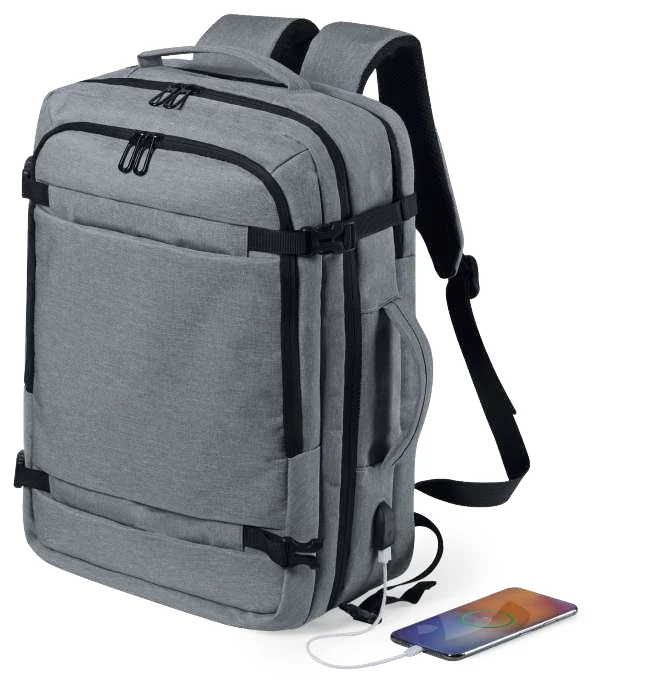

Duas gramagens, a mesma dimensão
Larsen e Emphy são sacos de algodão de 37 × 41 cm, mas as fichas indicam 105 e 300 g/m², respetivamente. Compare-os numa amostra; estes valores não representam o peso máximo que podem transportar.
Uma mochila tem vários componentes
A Sulkan acrescenta compartimentos, acolchoamento e ligação USB. Confirme o que será transportado e a dimensão do equipamento a guardar. Não deduza a existência de bateria a partir da ligação USB.
Escolher a zona da marca
Assinale o painel e verifique bolsos, fechos e costuras. A dimensão exterior do saco ou mochila não corresponde automaticamente à área imprimível.
Técnicas e confirmação
Compare os guias de serigrafia e bordado para perceber as diferenças de processo. A seleção final depende do artigo, do acesso à zona de trabalho e da validação da produção.
Uso e apresentação
Defina o conteúdo a transportar, a forma de distribuição e a apresentação final. Se resistência ou carga forem critérios essenciais, peça documentação ou ensaio específico em vez de inferir a partir da gramagem.
Exemplos documentados no catálogo
Referências para compreender materiais e variantes. As características correspondem à edição de 2026; não indicam disponibilidade atual nem trabalhos realizados pela Nobrinde.

Larsen 3322
- Saco de algodão com gramagem de 105 g/m².
- Dimensões indicadas: 37 × 41 cm.
Compare com o Emphy: a dimensão é igual, mas a gramagem é diferente. A gramagem não deve ser apresentada como uma carga máxima de transporte.

Emphy 1818
- Saco de algodão com gramagem de 300 g/m².
- Dimensões indicadas: 37 × 41 cm.
Uma alternativa para comparar ao toque e na construção. Confirme numa amostra o comportamento do tecido e a área a personalizar.

Sulkan 6620
- Mochila em poliéster 600D, acolchoada, com ligação USB e bolso acolchoado para portátil.
- Dimensões indicadas: 32 × 46 × 20 cm; compartimento para portátil de 17 polegadas.
Bolsos, costuras e acesso ao painel condicionam a escolha da zona de personalização. O telemóvel mostrado é um acessório ilustrativo; a ficha não o indica como incluído.
Base deste guia
Perguntas editoriais para preparar o trabalho, acompanhadas por exemplos do General Catalogue 2026. Cada exemplo identifica a página do PDF e a página impressa que suportam a fotografia e as características. As explicações técnicas e respetivas fontes encontram-se nos guias relacionados.